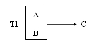
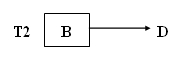
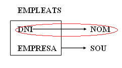
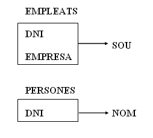

4. Segona Forma Normal (2FN)
- Es troba en 1FN.
- Tot atribut secundari (aquells que no pertanyen a la clau principal, els que es troben fora de la caixa) depèn totalment (té una dependència funcional total) de la clau completa i, per tant, no d'una part d'ella.
Aquesta forma normal només es considera si la clau principal és composta, i per tant, està formada per diversos atributs.
Si una taula T té com a atributs A, B, C, D i la clau és A . B complint-se les dependències:
A . B →C
B →D
S'observa que la taula no es troba en 2FN ja que l'atribut D no té una dependència funcional total amb la clau completa A . B , sinó amb una part de la clau (B). El graf de les dependències funcionals seria:

Si existeix una fletxa que ix de l'interior de la caixa que engloba la clau, aleshores la taula no està en 2FN.
Posar en 2FN
Per a convertir una taula que no està en segona forma normal a 2FN, es realitza una projecció i es crea:
A) Una primera taula amb la clau i totes les seues dependències totals amb els atributs secundaris afectats:

B) Una segona taula amb la part de la clau que té dependències, i els atributs secundaris implicats:

La clau de la nova taula T2 serà l'antiga part de la clau.
Exemple : Taula amb les persones que treballen en diverses empreses amb el sou corresponent, amb els atributs: DNI , NOM , EMPRESA , SOU
Entre els atributs existeixen les dependències:
DNI →NOM
DNI . EMPRESA →SOU
El graf que mostra les dependències és el següent:

És evident que la taula no es troba en 2FN, després de normalitzar s'obté:

De manera que la representació de les taules al model relacional quedaria de la manera següent:
EMPLEADO(dni,empresa,sueldo) PERSONA(dni,nombre)
Llicenciat sota la Llicència Creative Commons Reconeixement NoComercial SenseObraDerivada 3.0